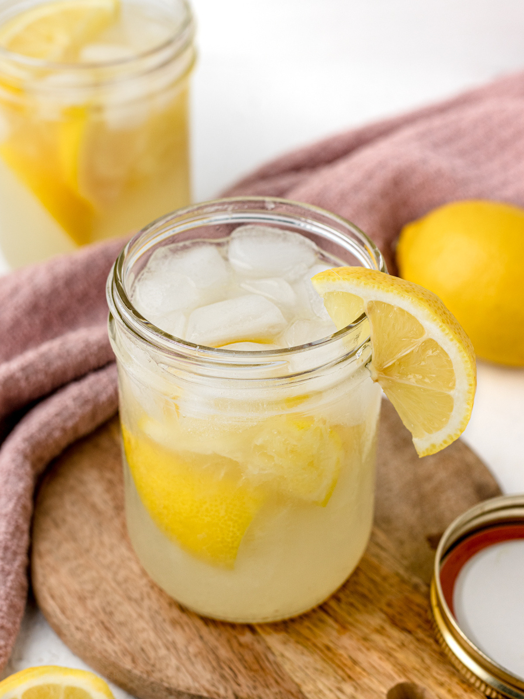

State Fair Lemonade

Description
This lemonade recipe is for real, authentic, vintage lemonade -the kind you might enjoy on a hot summer day at one of those stands at the state fair. Most of us make lemonade just out of lemon juice, but as you know, the oils in the lemon peel contain a tremendous amount of flavor, and once you drink this, you won't want to go back to drinking it how you used to.
Ingredients
- 6 lemons
- 1 1/4 cups white sugar
- 5 cups cold water
Steps
- Wash lemons and peel off all the zest using a vegetable peeler: set peeled lemons aside. Add lemon zest to a bowl and cover with sugar; toss to combine. Cover and let sit for a minimum of 2 hours, or up to overnight.
- Bring water to a boil in a pot over high heat; turn off heat and pour in lemon-sugar mixture. Stir and let sit until sugar is completly dissolved, about 5 minutes.
- Pour through a mesh strainer back into the same bowl and discard the zest. Let cool to room temperature, 20 to 30 minutes.
- Cut lemons in half and squeeze juice into the bowl. Pour lemonade into a serving pitcher; cover and chill thoroughly before serving over ice, at least 2 hours.